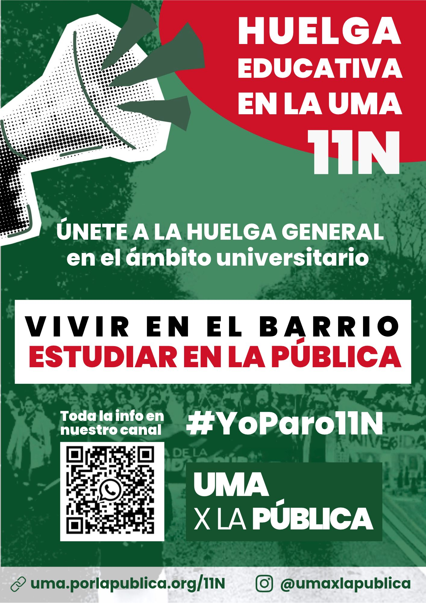
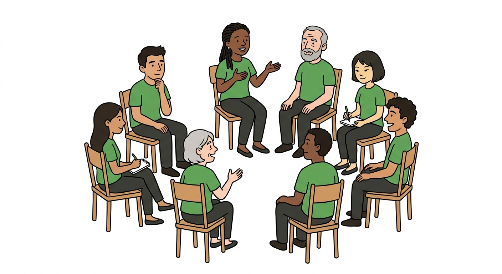
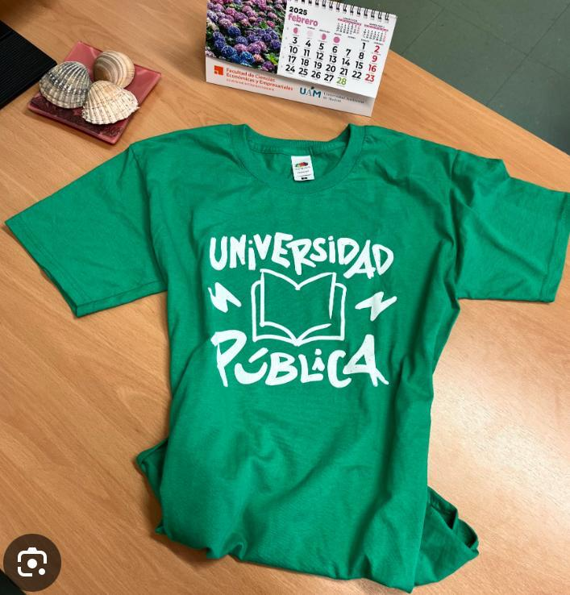
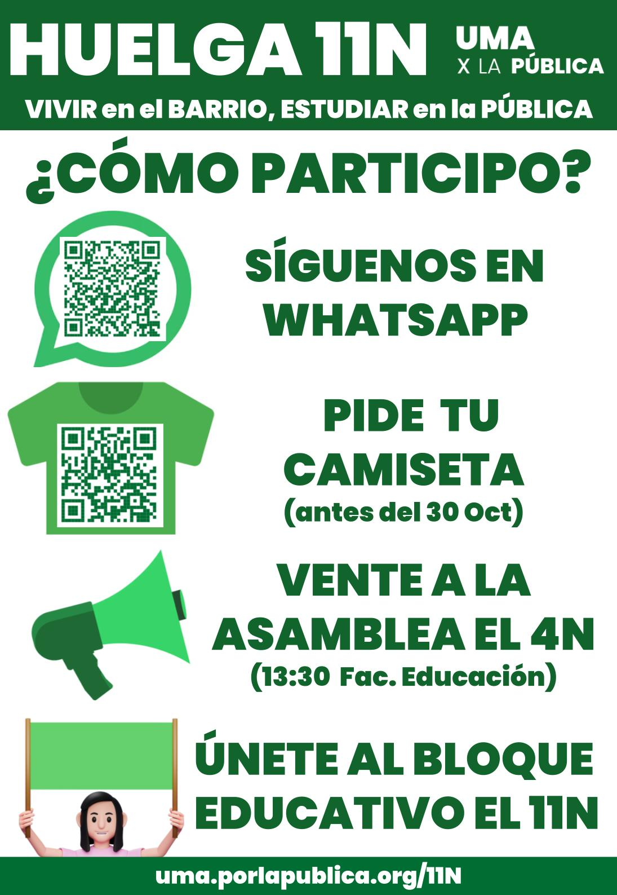
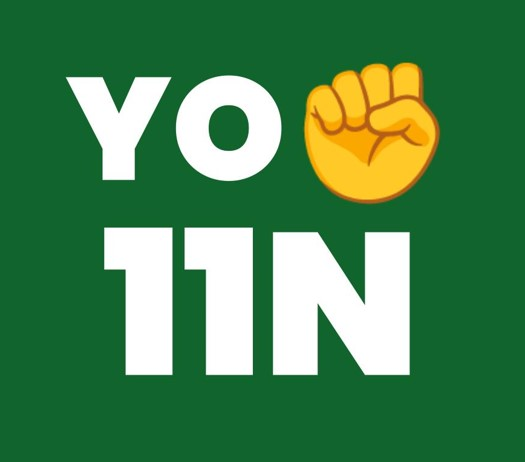

Huelga General 11 de Noviembre
🎯 ¿Quieres apoyar la huelga del 11N? Aquí te mostramos 10 formas fáciles de participar y ayudar a difundir este movimiento entre tus compañeras y compañeros.
Imprime y cuelga el cartel
Descarga el cartel de la huelga e imprímelo. Luego cuélgalo en tu facultad, centro de trabajo, biblioteca o espacios públicos para informar a más gente.


Síguenos en redes sociales
Únete al canal de difusión de WhatsApp y sigue la cuenta de Instagram para estar al día de todo lo que se mueve antes de la huelga.
Asiste a la asamblea general del 4N a las 13:30
Asiste a la asamblea general de UMA x la PÚBLICA el 4 de noviembre, una semana antes de la huelga general, para organizar la huelga y formar parte del bloque educativo. Será en la entrada de la Facultad de Educación.
VIVIR en el BARRIO, ESTUDIAR en la PÚBLICA

Participa en los comités de centro
Únete al comité de tu centro para dar visibilidad a la problemática de la universidad.
Lee y comparte las razones
Conoce a fondo por qué es importante esta huelga. Estas son las razones principales y puedes compartirlas con tus compañeras.
- Financiación suficiente según la LOSU (1%) que asegure los recursos necesarios para docencia, investigación y servicios generales de la UMA
- Condonación de la Deuda y Devolución de Remanentes
- Plan de vivienda asequible para estudiantes y personal de la UMA. Asegurar el acceso y la calidad de la residencia Alberto Jiménez Fraud. Los terrenos de la UMA para la comunidad universitaria, no para especular
- Becas y ayudas para el estudiantado. Garantizar la bonificación del 99% de las matrículas. Reforzar y extender las becas de cohesión social.
- Promoción y estabilización de la plantilla, garantizando una carrera profesional para el PDI y el PTGAS
- Oferta de empleo público que cubra el 100% de las jubilaciones
- Sistema retributivo justo, fin de la discriminación y la precariedad laboral
- Cumplimiento de los pliegos en la contratación de servicios externos como son limpieza, seguridad y cafeterías, entre otros.
- Restitución de la Acción Social y de los Planes de Prevención Sanitaria
- Creación de una mesa con presencia de los sindicatos y asociaciones estudiantiles para llevar a término de forma conjunta las presentes reivindicaciones
Añade el banner a tu firma de email
Muestra tu apoyo a la huelga en cada correo que envías. Descarga los banners diseñados para tu firma de correo electrónico.


💡 Ejemplo: cómo usarlo

- Guarda el banner
- Abre tu correo
- Ve a Firma
- Inserta la imagen
Ponte una camiseta o una chapa verde
El día de la huelga, vístete de verde. Si aún no tienes una camiseta, tienes que comprar la camiseta verde de UMA x la PÚBLICA y lucirla en la huelga y en las concentraciones. También puedes llevar la chapa verde.
Ponte la camiseta verde también los miércoles verdes para dar difusión al movimiento, y anima a tus compañeras y compañeros a hacer lo mismo.
Las chapas se pueden adquirir por 1 € en los actos y asambleas de UMA x la PÚBLICA. Las camisetas cuestan 12 € o 15 € según el modelo; para comprarlas, pulsa el botón.

Imprime y reparte flyers
Imprime los flyers y repártelos entre tus compañeras y compañeros de clase y de centro. Elige 2 por página para flyers más grandes, o 4 por página para imprimir más ejemplares con cada hoja.

Lee las FAQs y comparte
Estas son las preguntas frecuentes sobre la huelga. Léelas para estar preparada y compártelas con tus compañeras para responder sus dudas.
1. ¿Quiénes podemos hacer huelga?
Todas las personas trabajadoras incluidas en el ámbito de la convocatoria pueden hacer huelga independientemente del tipo o la duración de su contrato.
En la Universidad esto incluye al PTGAS y a todo el PDI (personal investigador, profesorado interino, asociados, laborales y funcionarios).
No afecta el tiempo que lleves contratada o si estás afiliada a un sindicato. El derecho a huelga es individual y garantizado por la Constitución (art. 28.2).
2. ¿Tengo que avisar de que voy a hacer huelga?
NO. No tienes la obligación de avisar previamente de que vas a hacer huelga. Cualquier comunicación previa del seguimiento de huelga (emails, formularios, de forma verbal…) resultaría incompatible con el pleno y libre ejercicio del derecho de huelga del art. 28.2 CE, ya que según la doctrina constitucional el derecho fundamental a la huelga no puede ser sometido a comunicación previa y anticipada por parte de las y los trabajadores.
Por tanto… NO tienes que comunicarlo a tu departamento, a tu director/a de tesis, a los coordinadores de la asignatura, al responsable de tu servicio si eres PTGAS, ni a ninguna persona con independencia del lugar que ocupe en la jerarquía interna de la Universidad.
3. Soy estudiante, ¿puedo sumarme a la huelga?
SÍ. El consejo de estudiantes de la UMA (CEUMA) ha convocado un PARO ACADÉMICO para los días 10 y 11 noviembre. Toda la comunidad puede participar en la huelga del 11N.
4. ¿Puedo recibir represalias?
NO. Hacer huelga es un derecho fundamental y no pueden sancionarte, despedirte, perjudicarte en la renovación de tu contrato ni tomar otras represalias por ejercerlo. Cualquier represalia se puede denunciar en los 20 días siguientes.
La única consecuencia de hacer huelga es que te descuentan la parte proporcional de tu salario y pueden no cotizar ese día. Es la universidad, con sus propios medios, la que debe encargarse de esta cuestión.
Ante cualquier represalia o vulneración de tu derecho a huelga, contacta con tu sindicato o con el comité de huelga.
5. ¿Puedo hacer huelga si ese día tenía programado un examen o una prueba práctica en mis clases?
SÍ. Y nadie te puede sustituir. Se pueden establecer servicios mínimos, pero si son abusivos se puede denunciar.
6. ¿Tengo que recuperar las clases perdidas por haber secundado la huelga?
NO. Pero... “me preocupa no recuperar esas clases y que tenga un impacto negativo en la formación de mis estudiantes”…
La infrafinanciación, la precariedad y sobrecarga laboral ya están teniendo un impacto negativo en la calidad de la formación universitaria, la investigación y los servicios que recibe nuestro estudiantado.
Pon esta foto en tu WhatsApp
Cambia tu foto de perfil en WhatsApp por esta imagen. Es una forma simple pero efectiva de mostrar tu solidaridad con la huelga.

